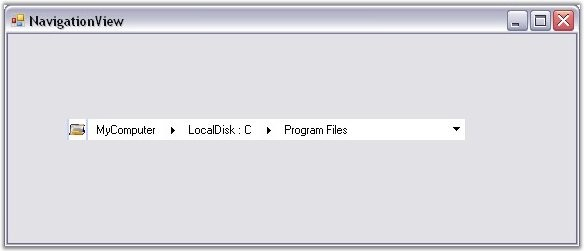

To create a NavigationView control programmatically, follow the below given steps.
1. Include the Tools Windows namespace to the .cs / .vb file.
|
[C#]
using Syncfusion.Windows.Forms.Tools; |
|
[VB.NET]
Imports Syncfusion.Windows.Forms.Tools |
2. Create an instance of the NavigationView control and add Parent Bars and Child Bars to it.
|
[C#]
//Creating instance of NavigationView NavigationView navigationView4 = new NavigationView(); // Creating instance of Bars Syncfusion.Windows.Forms.Tools.Navigation.Bar Rootbar = new Syncfusion.Windows.Forms.Tools.Navigation.Bar(); Syncfusion.Windows.Forms.Tools.Navigation.Bar ChildBar1 = new Syncfusion.Windows.Forms.Tools.Navigation.Bar(); Syncfusion.Windows.Forms.Tools.Navigation.Bar ChildBar2 = new Syncfusion.Windows.Forms.Tools.Navigation.Bar(); Rootbar.ImageIndex = 0; Rootbar.Text = "MyComputer"; ChildBar1.ImageIndex = 1; ChildBar1.Text = "LocalDisk : C"; ChildBar2.ImageIndex = 1; ChildBar2.Text = "Program Files"; // Adding child bars into Rootbar ChildBar1.Bars.AddRange(new Syncfusion.Windows.Forms.Tools.Navigation.Bar[] { ChildBar2}); Rootbar.Bars.AddRange(new Syncfusion.Windows.Forms.Tools.Navigation.Bar[] { ChildBar1}); // Adding the rootbar into NavigationView navigationView4.Bars.AddRange(new Syncfusion.Windows.Forms.Tools.Navigation.Bar[] { Rootbar}); navigationView4.ImageList = this.imageList1; navigationView4.Location = new System.Drawing.Point(250, 300); navigationView4.Name = "navigationView"; navigationView4.Size = new System.Drawing.Size(343, 21); navigationView4.TabIndex = 0; navigationView4.Text = "navigationView"; // Setting the Visual Style into Vista navigationView4.VisualStyle = Syncfusion.Windows.Forms.Tools.Navigation.VisualStyles.Vista; this.Controls.Add(navigationView4); |
|
[VB.NET]
'Creating instance of NavigationView
Dim navigationView4 As NavigationView = New NavigationView() ' Creating instance of Bars Dim Rootbar As Syncfusion.Windows.Forms.Tools.Navigation.Bar = New Syncfusion.Windows.Forms.Tools.Navigation.Bar() Dim ChildBar1 As Syncfusion.Windows.Forms.Tools.Navigation.Bar = New Syncfusion.Windows.Forms.Tools.Navigation.Bar() Dim ChildBar2 As Syncfusion.Windows.Forms.Tools.Navigation.Bar = New Syncfusion.Windows.Forms.Tools.Navigation.Bar() Rootbar.ImageIndex = 0 Rootbar.Text = "MyComputer" ChildBar1.ImageIndex = 1 ChildBar1.Text = "LocalDisk : C" ChildBar2.ImageIndex = 1 ChildBar2.Text = "Program Files" ' Adding child bars into Rootbar ChildBar1.Bars.AddRange(New Syncfusion.Windows.Forms.Tools.Navigation.Bar() { ChildBar2}) Rootbar.Bars.AddRange(New Syncfusion.Windows.Forms.Tools.Navigation.Bar() { ChildBar1})
' Adding the rootbar into NavigationView navigationView4.Bars.AddRange(New Syncfusion.Windows.Forms.Tools.Navigation.Bar() { Rootbar}) navigationView4.ImageList = Me.imageList1 navigationView4.Location = New System.Drawing.Point(250, 300) navigationView4.Name = "navigationView" navigationView4.Size = New System.Drawing.Size(343, 21) navigationView4.TabIndex = 0 navigationView4.Text = "navigationView" ' Setting the Visual Style into Vista navigationView4.VisualStyle = Syncfusion.Windows.Forms.Tools.Navigation.VisualStyles.Vista Me.Controls.Add(navigationView4) |

Figure 1477: NavigationView with Bars